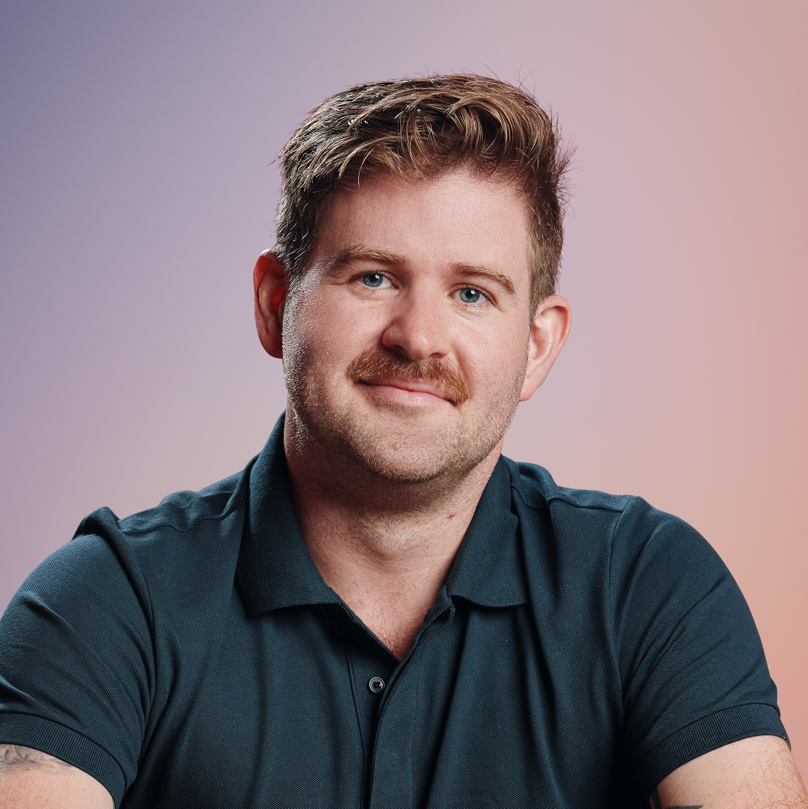

Sam has advised and led work inside organizations including


Speaking · Keynotes · Workshops
Sam Spurlin speaks about organizational evolution and the craft of working deliberately—at every scale, from the individual practitioner to the executive team to the whole organization. These aren't keynote-circuit ideas. They come from the grounded perspective of someone who has spent the past decade on the ground inside organizations of every kind, doing the work he talks about.
Sam has advised and led work inside organizations including
Individuals, organizations, and societies are all facing the same problem. What if the way through is the same, too?
Rising complexity is breaking our operating systems at every scale: the individual drowning in demands they didn't choose, the organization that can't change how it works, the society straining under problems its institutions weren't built for. We treat these as three separate crises with three separate bookshelves. This talk—drawn from the course Sam taught at Critical Business School—argues they're the same problem at different scales, and that the capacities that help organizations adapt are the same ones that help people thrive. The way through isn't more control. It's building genuine agency: the ability to see the system you're inside and act on it deliberately.
Everyone owns a piece of how your organization works. Who owns the system?
Most organizations are renting their change capability from consultants when they should be building their own—bespoke, customized, and deeply integrated. The old assumption of "design once, run forever" has been replaced by the reorg treadmill: restructure, wait eighteen months, restructure again. Disruption without adaptive capacity, just as destructive as standing still. This talk makes the case for a different function entirely: an organizational catalyst that owns the organizational operating system and tends its ongoing fitness. Drawing on an extended detour through nuclear physics—fission to release the energy trapped in organizational debt, fusion to bring fragmented capability together—it argues the goal isn't a changed state. It's criticality: a self-maintaining capacity for adaptation that doesn't depend on periodic outside intervention.
If culture is created by the quality of an organization's interactions—and meetings are where most interactions happen—what are your meetings building?
Facilitation gets reduced to tips and tricks for running a meeting. This talk reframes it as something much bigger: meeting design as the most accessible form of org design there is. Meetings amplify and reflect the organization back to us—who gets invited reveals assumptions about authority, whether decisions stick reveals whether authority is clear, how information flows reveals whether the organization has a memory. Which makes better meetings a helpful Trojan horse: improving them quickly surfaces the deeper questions about strategy, decision rights, and ways of working. The talk covers the craft itself—the three meeting modes and why most dysfunction comes from mixing them, designing an operating rhythm, holding the container rather than just keeping time—and treats each meeting as an act of worldbuilding for the team that inhabits it.
Every one of these talks gets tailored to your audience through a pre-event conversation. But if your event calls for something none of them quite covers, Sam will gladly work with you to develop a custom talk for your specific need and moment—grounded in the same decade of on-the-ground experience.
START A CONVERSATION"You absolutely delivered on our expectations. I really appreciate all the thought, care and time you clearly put into it. It showed throughout. It delivered exactly what I had hoped for — provoking people's thinking, giving them fresh language and frameworks and helping them feel more resourced in their own roles."Garin Rouch · CIPD Event Organizer
"I called Sam up to bring his specific brilliance with organizations, leaders, and teams… he jumped right in and delivered everything we hoped for and more. He's a great teacher and a great listener who brings a rare kind of upbeat, compassionate, and get-stuff-done energy."Infrastructure & Urban Systems Client
"You've definitely given me food for thought, thank you so much, great session."Organizational Catalysts Talk Attendee

Sam Spurlin is an organization designer and the founder of Deliberate Works. For over a decade he has helped executive teams change how their organizations actually operate—leading transformation work for global companies and coaching senior leaders through complex structural and strategic challenges.
His work centers on a single conviction: the ability to change how you work is itself a skill, and it belongs inside the organization, not outsourced to consultants. His background in positive psychology and systems thinking informs a practice oriented toward making organizations more adaptive, more humane, and less dependent on outside help to navigate complexity.
He writes The Deliberate, a newsletter on the craft of operating well inside complex systems—at the scale of the individual, the organization, and beyond.
30–60 minutes, with optional Q&A. Tailored to your event's theme and audience through a pre-event conversation.
Half-day or full-day working sessions for leadership teams and practitioner groups. Not a talk with worksheets—actual sensemaking on your real problems.
Keynotes and workshops available remotely for distributed teams and online events.
Based in the New York area · Available for travel worldwide · Fees discussed during inquiry
Tell me a little about your event and I'll get back to you within two business days. If timing is tight, say so—I'll prioritize accordingly.
Thanks for reaching out. I'll be in touch within two business days.